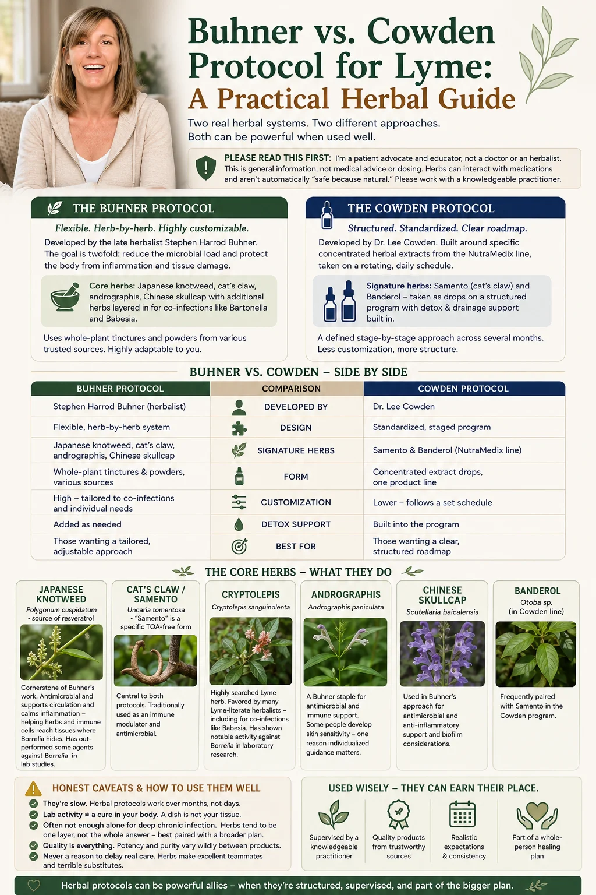

Buhner vs. Cowden Protocol for Lyme: A Practical Herbal Guide
If you've gone looking for herbal help with Lyme, two names dominate every conversation: Buhner and Cowden. Both are real, structured herbal systems — not random supplement stacks — and they work differently. Here's a plain-language guide to the key herbs, how the two protocols compare, and the honest caveats no one puts on the label.
Herbs were part of my own family's healing, and they're one of the most-searched corners of the Lyme world — for good reason. But "just take herbs" is where a lot of people go wrong. The two named protocols below exist precisely because Lyme herbalism works best as a system, not a guessing game. Let me walk you through both. (For the wider view of natural options beyond herbs, see my guide to natural & holistic Lyme treatments.)
Quick answer
What is the Buhner protocol for Lyme?
The Buhner protocol is a system of herbal medicine for Lyme disease developed by the late herbalist Stephen Harrod Buhner. It centers on whole-plant herbal tinctures and powders — most notably Japanese knotweed, cat's claw, andrographis, and Chinese skullcap — chosen both for antimicrobial activity against Borrelia and for reducing the inflammation and tissue damage the infection causes. Buhner also tailored additional herbs to specific co-infections such as Bartonella and Babesia. It is typically used over months and should be guided by a knowledgeable practitioner.
Key Takeaways
- Two structured herbal systems dominate: Buhner and Cowden — real protocols, not random supplement stacks.
- They work differently: Buhner leans on bulk herbs and knotweed-based cores; Cowden uses concentrated microbial-defense tinctures on a rotating schedule.
- Core herbs include Japanese knotweed, cat’s claw, cryptolepis, and andrographis.
- Herbs are a tool, not a lottery ticket — they can interact, cause herxing, and aren’t regulated; go slow and get guidance.
- Best used within a plan, not as a stand-alone cure.

The Buhner protocol
Developed by the late herbalist Stephen Harrod Buhner, this is the more flexible, herb-by-herb of the two. Buhner's thinking was that healing Lyme means doing two jobs at once: reducing the microbial load and protecting the body from the inflammation and tissue damage the infection drives. His core herbs are typically Japanese knotweed, cat's claw, andrographis, and Chinese skullcap, with additional herbs layered in for specific co-infections like Bartonella and Babesia.
Because it's assembled herb-by-herb (often from various trusted sources as tinctures and powders), the Buhner approach is highly customizable — which is its strength and its complexity. It rewards someone guiding the adjustments.
The Cowden protocol
The Cowden protocol (or Cowden Support Program), developed by Dr. Lee Cowden, is the more standardized, turnkey option. It's built largely around specific concentrated herbal extracts from the NutraMedix line — most famously Samento (a form of cat's claw) and Banderol — taken as drops on a structured, rotating daily schedule, with drainage and detox support built into the program, usually across several months.
Its appeal is exactly that structure: a defined stage-by-stage schedule rather than a build-your-own regimen. For people who want a clearer roadmap, that's reassuring — though it's still not something to freewheel without guidance.
Buhner vs. Cowden: which should you choose?
| Buhner Protocol | Cowden Protocol | |
|---|---|---|
| Developed by | Stephen Harrod Buhner (herbalist) | Dr. Lee Cowden |
| Design | Flexible, herb-by-herb system | Standardized, staged program |
| Signature herbs | Japanese knotweed, cat's claw, andrographis, Chinese skullcap | Samento & Banderol (NutraMedix line) |
| Form | Whole-plant tinctures & powders, various sources | Concentrated extract drops, one product line |
| Customization | High — tailored to co-infections | Lower — follows a set schedule |
| Detox support | Added as needed | Built into the program |
| Best for | Those wanting a tailored, adjustable approach | Those wanting a clear, structured roadmap |
Buhner & Cowden Protocol FAQ
An herbal system for Lyme developed by herbalist Stephen Harrod Buhner, built around whole-plant herbs — most notably Japanese knotweed, cat's claw, andrographis, and Chinese skullcap — chosen for both antimicrobial activity and calming the inflammation Lyme causes, with extra herbs tailored to co-infections. It's used over months and best guided by a practitioner.
An herbal regimen by Dr. Lee Cowden, built mainly around NutraMedix extracts like Samento (a cat's claw form) and Banderol, taken as drops on a structured rotating schedule with built-in detox support, usually over several months. It's more standardized and turnkey than Buhner's.
Buhner is a flexible, herb-by-herb system (knotweed, cat's claw, andrographis, skullcap) adjusted for co-infections; Cowden is a standardized, staged program around specific NutraMedix products (Samento, Banderol) on a set schedule with detox built in. Buhner is more customizable; Cowden more turnkey. Many practitioners blend both.
Cryptolepis is strongly associated with Lyme herbalism and used by many practitioners (including Buhner-influenced ones), especially for co-infections like Babesia. It's shown notable activity against Borrelia in lab studies — but lab activity isn't the same as clearing infection in the body, so use it under guidance.
Not guaranteed — results vary. They can be a meaningful part of recovery for some, especially milder or earlier cases, but for deep chronic infection they're often not enough alone. They work best as one layer of a broader plan, are slow, need consistency and quality products, and shouldn't be used to delay other needed care.
References & further reading
- Centers for Disease Control and Prevention (CDC) — Lyme Disease. cdc.gov/lyme
- International Lyme and Associated Diseases Society (ILADS) — evidence-based guidelines and research. ilads.org
- MedlinePlus (U.S. National Library of Medicine, NIH) — Lyme Disease. medlineplus.gov
- Johns Hopkins Lyme Disease Research Center. hopkinslyme.org
A general orientation, not a prescription. Both protocols have variations, and many practitioners blend elements of each. Specific herbs, forms, and schedules should come from your practitioner.
The core herbs, explained
These are the herbs people search for by name. A quick, honest primer on each:
Japanese knotweed
A cornerstone of Buhner's work — valued for antimicrobial activity and, notably, for supporting circulation and calming inflammation, helping herbs and immune cells reach tissues where Borrelia hides. It has outperformed some agents against Borrelia in lab studies.
Cat's claw / Samento
Central to both protocols (Cowden uses the Samento form). Traditionally used as an immune modulator and antimicrobial. It's the herb that most links the two systems.
Cryptolepis
One of the most-searched Lyme herbs, favored by many Lyme-literate herbalists — including for co-infections like Babesia. It has shown notable activity against Borrelia in laboratory research, though lab activity isn't the same as clearing infection in a person.
Andrographis
A Buhner staple used for antimicrobial and immune support. Some people develop a skin sensitivity to it, which is one reason individualized guidance matters.
Chinese skullcap & Banderol
Chinese skullcap is used in Buhner's approach for antimicrobial and anti-inflammatory support and biofilm considerations; Banderol is the Cowden line's frequent partner to Samento.
Honest caveats & how to use them well
I want you to go in clear-eyed, because hope plus misinformation is an expensive combination in this world:
- They're slow. Herbal protocols work over months, not days, and demand consistency.
- Lab activity ≠ a cure in your body. An herb killing Borrelia in a dish doesn't guarantee the same at a tolerable dose through your gut and tissues.
- Often not enough alone for deep chronic infection. For longstanding cases, herbs tend to be one layer, not the whole answer — best paired with the broader plan.
- Quality is everything. Potency and purity vary wildly between products; this is not the place to bargain-hunt.
- Never a reason to delay real care. Herbs make excellent teammates and terrible substitutes.
Used wisely — supervised, quality products, realistic expectations, as part of a whole-person plan — herbal protocols can absolutely earn their place. That's the spirit in which I'd want a friend to try them.
Wondering if herbs belong in your plan — and how? Let's talk, free →
Medical disclaimer: This article is for educational purposes only and is not medical advice, diagnosis, treatment, or dosing guidance. Herbal protocols involve pharmacologically active substances that can interact with medications and cause adverse effects; they should be undertaken only with a qualified healthcare professional or clinical herbalist. Product and brand names are mentioned for identification only and are not endorsements. Christina Carter is a patient advocate and educator, not a licensed medical provider.